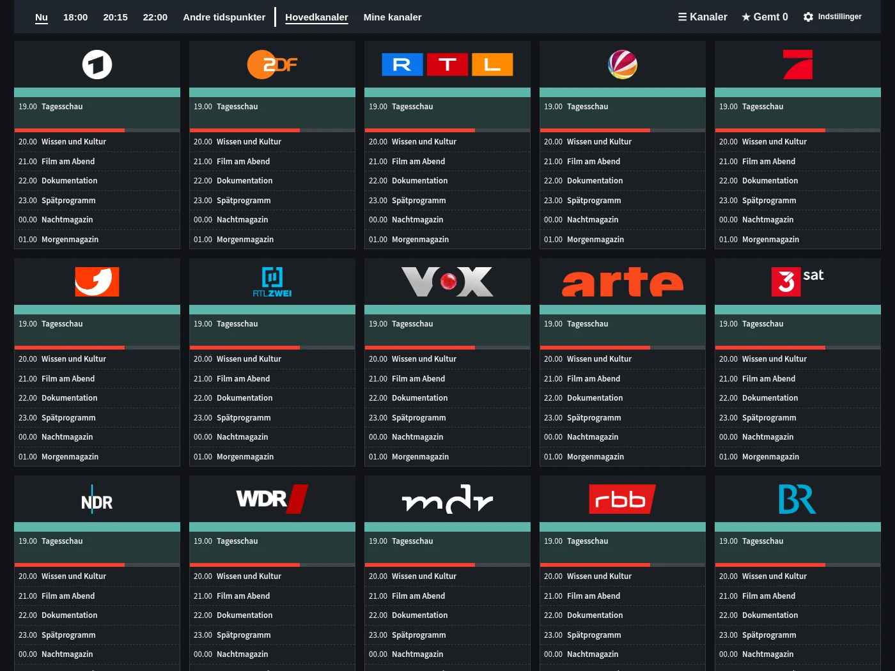
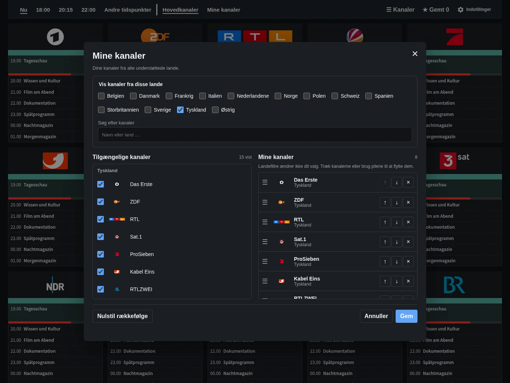
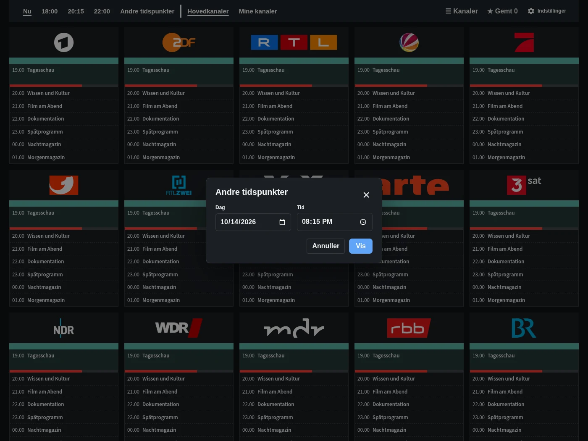
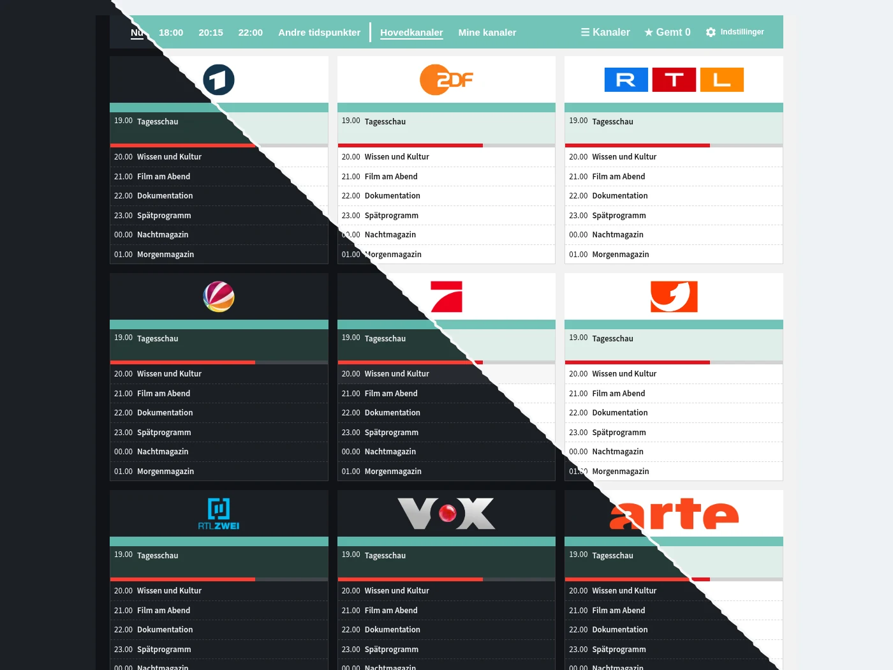

Programoversigt
Kanaler, tider og programmer på ét sted. Gå direkte til nu, 18:00, 20:15 eller 22:00.
Se programoversigten, personlige kanallister, tidsvalg og det valgfrie dashboardkort.

Kanaler, tider og programmer på ét sted. Gå direkte til nu, 18:00, 20:15 eller 22:00.

Vælg favoritter fra de understøttede lande, og sæt dem i din egen rækkefølge.

Vælg en anden dato og tid uden at forlade oversigten.

Tilføj TV Guide til dit eget dashboard. Hele guiden er også klar til brug i sidepanelet.
Eksempelprogrammer. Programtitler vises på originalsproget.
Gratis og direkte i Home Assistant.
Åbn i HACS